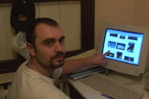
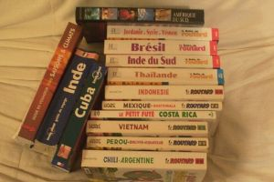
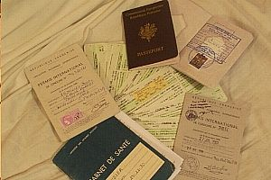
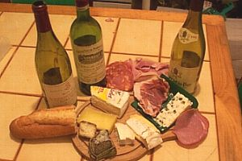

|
Peut-être êtes-vous en train de vous demander comment
préparer un tour du monde, quelles sont les préparations
pour un tel voyage... voici nos quelques humbles conseils...
Préparatifs J-30
Le grand départ approche à pas de géant maintenant ... Dans
un mois, ça y est. Et nous sommes fin prêts ... A
quelques détails près, puisque :
- mon passeport n'est toujours pas prêt,
- il me reste encore quelques vaccins à faire,
- il faut se renseigner pour une assurance ...
Mais le trajet, lui, est pour ainsi dire tracé et les billets,
même si nous ne les avons pas encore, sont achetés
(voir plus bas).
Passeport et visas
Il faut juste penser à un truc avant de partir : le
passeport doit encore être valide au moins six mois après
la fin de votre voyage. Beaucoup de pays impose cela. Quant aux
visas, date de validité oblige, nous n'avons acheter que
celui de la Jordanie et de l'Inde. Pour les autres, on les achétera
à la frontière (c'est le cas pour le Népal).
Pour le Laos et le Vietnam, c'est depuis la Thaîlande que
nous ferons les démarches, pour le Cambodge, ce sera depuis
Saïgon. Quant à tous les pays que nous traverserons
en Amérique du Sud, il n'y a pas de Visa.
Pour
faire un visa, à part des dollars, il faut des photos d'identité...
|  |
 |
| Lionel devant le site |
La tonne de guide |
Les vaccins
On a fait les vaccins classiques pour ce genre de destinations :
fièvre jaune, hépatite A et B, thyphoïde et tétanos.
Le mieux est d'en parler à son médecin. Surtout qu'il peut-être
de bon conseil pour la préparation de la trousse médicale.
Une petite particularité toutefois, on a décidé
de se faire vacciner contre la rage...
Nous
avons eu besoin de notre carnet de vaccination pour passer la frontière
entre le Vietnam et le Cambodge. La fièvre jaune était
obligatoire...
Le traitement anti-paludisme
Nous sommes allé voir un médecin spécialiste
des maladies tropicales (un militaire) qui nous a étudié
notre trajet et nous a conseillé de suivre un traitement
anti-paludisme pendant pratiquement tout notre trajet. Nous avons
donc acheter un tonne de médicaments (Lariam et Paludrine
pour ne pas les citer) qui nous ont coûté une fortune
(en passant, un conseil aux frontaliers, ils sont moins chers au
Luxembourg...).
Avec le recul
On aura trimbaler ce traitement anti-palu pour rien ! On s'est
dit (à mon avis à juste titre) qu'on aurait du mal
à suivre un traitement aussi long. Alors, à force
de repousser... En fait, on a préféré jouer
la carte de la prévention en évitant les moustiques.
Vêtements long des la tombée de la nuit, anti-moustique.
Et surtout, un truc génial : une moustiquaire !
Finalement pas si encombrant que cela si on prend on compte le plaisir
de dormir sans le bruit horrible du moustique dans l'oreille !
Les médicaments
Mieux vaut prévenir que guérir ! On a emporté
pas mal de médicaments. De l'aspirines, des désinfectants,
le traitelents classiques pour les problème de tourista (ercefuril
et ...), des pansements gastriques. Vous pouvez voir plus en détail
le contenu de notre trousse.
Avec le recul
On se sera servi de peu de chose. On a eu la chance de n'être
pratiquement jamais tombé malade. Quelques tout petits problèmes
d'estomac de temps en temps, mais rien de bien grave.
Les sacs à dos
Le but est d'avoir un sac à dos d'un poids raisonnable,
et d'avoir l'indispensable à l'intérieur. Il sera
notre compagnon de route pendant un an, autant dire qu'il va falloir
réfléchir à ce que l'on va y mettre dedans
! Même si on ne l'aura pas 24h/24h sur le dos, il doit nous
permettre de nous balader à la recherche d'un hôtel sans mourir
sous son poids.
Nous auront chacun un sac à dos de 60 litres pour les fringues
essentiellements, les sacs de couchages, les affaires de toilette
et les médicaments. Mieux vaut partir avec un sac un peu plus grand
pour avoir un peu de place disponible pour plus tard, pour les achats
par exemple.
On
double nos sacs à dos avec un sac poubelle résistant
(genre "spécial jardin") qui nous permet d'avoir nos affaires toujours
au sec. Bien utile lorsque le sac passe toute la nuit sur le toit
d'un bus et qu'un orage énorme explose. Et on range nos affaire
dans des petits sacs en toiles, histoire d'éviter que ce
soit trop le fouilli et que tout se mélange.
Si vous êtes vraiment curieux, découvrez le
contenu de nos sacs.
Chacun aura auusi un sac à dos de petite taille (20 litres), pour
les balades de la journée. Il nous permet de transporter l'appareil
photo, une bouteille d'eau que l'on garde au frais en l'entourant
d'un paréo (si, si, ça marche pas mal!), etc.
Le couchages
Nous avons deux duvets "sarcophages" résistant
au froid. Pour éviter de les salir de trop, on hésite
à prendre des "sacs à viande" (comme un
sac de couchage, mais fait en drap, pour glisser à l'intérieur
du duvet)... Finalement, on abandonne l'idée.
Les vêtements.
Les besoins vont changer en fonction du climat des pays que nous
allons traverser. Nous n'aurons pas besoin de grand chose pour le
début de notre voyage puisque le climat sera plutôt
agréable en Jordanie et en Asie. L'essentiel de notre tenue
sera composé de T-shirts et shorts, de pantalon en toile
très léger, de chemise légères et d'une
tenue pour la pluie (coupe vent et cape). Pour la deuxième
partie, cela va se gâter un peu puisque le climat dans la
Sud du Chili et de l'Argnetine est plus frais. Nous prenons un pull,
et des T-shirt genre "Damard"...
Et
puis, on verra bien sur place s'il nous manque des affaires. On
trouve en général pas mal de vêtements bon marché
un peu partout, alors pas d'inquiétude !
Quant à la quantité, on sera moins chargés
que lorsqu'on part en week-end. Il nous faudra faire régulièrement
la lessive de toute façon, alors un peu plus ou un peu moins !
L'argent, les papiers
Pour transporter l'argent et les papiers importants comme les
billets d'avion, nos passeport, ou encore les cartes Visa, on a
chacun une petite banane-ceinture de sécurité (on en trouve dans
les hyper de sport) que l'on place autour de la taille. Lorsqu'on
traverse une région qui "craint" un peu, le tout se retrouve sous
le T-shirt et même sous le pantalon. Pratique et discret.
Comme
pour les sacs à dos, là-aussi, obsession de l'humidité :
on prend des petits sacs bien étanches (en fait des sac de
congélation) pour les passeports, les billets d'avions, les
pellicules, bref, ce qui doit rester bien sec.
Encore
un petit truc : nous avon scanné tous nos papiers, les
billets d'avions, notre carnet d'adresse. Le tout est disponible
sur notre site Internet. En cas de perte ou de vol, cela sera peut-être
utile !
Les guides de voyages
On a déjà pratiquement tous les guides (routard et
lonaly). Ils nous ont permis de préparer un peu notre trajet,
de décider combien de temps nous passeriosn dans chaque pays
ou chaque continent. On ne prendra avec nous qu'une partie des guides.
On se fera envoyer (chez nos amis Isa et Jeremy en Thailande) le
reste.
Et
puis on compte bien en acheter sur place. Il y a toujours un voyageur
prêt à revendre le sien. Et puis dans beaucoup de pays,
en particulier en Asie, il existe des boutiques qui en vendent d'occasion
ou qui proposent des contre-façons photocopiés. C'est
pas bien !
Préparatifs J-15
Le temps passe mais nous sommes pratiquement prêts. Pratiquement,
parce qu'il nous reste encore quelques vaccins, dont la dernière
injection contre la rage prévue pour le jour du départ (mais cela
n'étonnera pas trop ceux qui nous connaissent bien).
Cela dit, nous sommes bien avancés puisque les billets sont en
poche, le visa pour la Jordanie est déjà accordé et que nous attendons
ceux pour l'Inde. Pendant que je m'occupe (entre autre) de mettre
le site à jour, Marion étudie et planifie un peu nos trajets.
Les billets d'avions tour
du monde
Nous avons opté pour une formule "tour du monde".
Ce genre de billet est valable pendant un an et il permet de composer
soi-même son trajet et de définir ses escales un peu
partout dans le monde. Il y a deux alliances de compagnies qui proposent
ces services: la Star-Alliance et OneWorld. Nous partirons avec
la Star-Alliance. Nos billets d'avions "tour de le monde"
sont en fait composés de 15 billets !!! Vraiment impressionnant.
Il va falloir trouver un système pour les mettre en sécurité
pendant notre voyage, histoire d'être sûrs de ne pas
rentrer à pieds.
Etant donné que nous n'habitons pas Paris, il y a pas beaucoup
d'agences qui sont capables de nous aider pour une telle demande.
Heureusement, on finit par tomber sur Myriam de l'agence Anthéa
de Metz. Elle a planché non-stop sur nos billets pendant
plus d'une semaine complète afin de nous obtenir les meilleurs
tarifs. Et je pense qu'elle a réussi à avoir un bon
prix : 17 781 FF, soit quelque chose comme 2700 euros
(en 2001 rapelons-le).
On est content de notre trajet. Départ de Paris vers la
Jordanie. Puis de Jordanie vers l'Inde ou l'on restera 3 mois. Ensuite
direction Bangkok. Là aussi, 3 mois sur place avant un nouveau
saut, vers l'amérique du Sud cette fois-ci.
En
fait, cette configuration de voyage est intéressante :
des dates à repecter tous les 2 ou 3 mois mais beaucoup de
liberté entre ces grands sauts en avion. Un bon équilibre...
Notre formule nous permettait en plus de changer gratuitement la
date des différents vols, mais aussi les destinations (pour
75 dollars)
Le cartes VISA, la date de validité!
Il a fallu également penser aux cartes VISA. Les trois que
nous avions expirent pendant l'année 2001. Du coup il a fallu
les faire refaire toutes. Si en France, c'est assez rapide (une
petite semaine) au Luxembourg on m'a dit que cela pouvait prendre
3 semaines. Cela nous amène après le jour de notre
départ ! A ce propos, pour nous la carte de Visa sera
le moyen de paiement privilégiés. Nous aurons bien
sûr quelques travellers chèques et des dollars en espèces,
mais la présence de distributeurs partout dans le monde et
le faible coût de la commission (cela dépend fortement
des banques) en fait un moyen de paiement assez pratique.
Assurances
Ca y est, nous sommes assurés. Histoire d'être couverts
en cas d'hospitalisation ou de rapatriement pendant notre tour du
monde. Car si on est couvert par la sécurité sociale
en rentrant, pour le rapatriement et les frais à l'étranger,
ce n'est pas aussi simple sans assurance...
|  |
 |
| Passeports, permis, billets d'avion ... |
Les derniers repas à la française
(sniff) |
En attendant, on se fait des petites bouffes sympas en oubliant
que le repas va être composé de riz (en Asie) pendant
6 mois et de pommes de terre (en Amérique du Sud) le reste
du temps. En fait, on n'arrête pas de "bouffer"
tout ce qui nous tombe sous la dent !!!
Les formalités diverses avant le départ
On a besoin de plein de forces pour accomplir ce qui reste à
faire : préparer les papiers pour les impôts, ceux
de banques, les procurations diverses et variées (PTT, banques,
livrets épargne, etc, etc ...), assurances, la sécu,
la mutuelle, etc, etc ... C'est fou ce qu'il y a à faire
pour partir un an autour du monde! Si j'avais su... Et en plus,
il faut préparer le déménagement puisqu'on
quitte notre appartement, résilier les contrats EDF, GDF,
France télécom, itinéris, faire suivre le courrier,
faire de super restos avec les copains (ha non, ça c'est
dans les trucs sympas, pas dans les "la barbe" !)
Pour tout savoir sur notre façon d'écrire les carnets
de voyages, de faire le site Internet et de développer les
photos tout en se baladant autour du monde :
en savoir plus sur les photos et l'écriture du site.
Pour connaitre en détail nos trajets, les distances parcourus, le temps nécessaire et le coût des transport :
en savoir plus sur les transports.
|